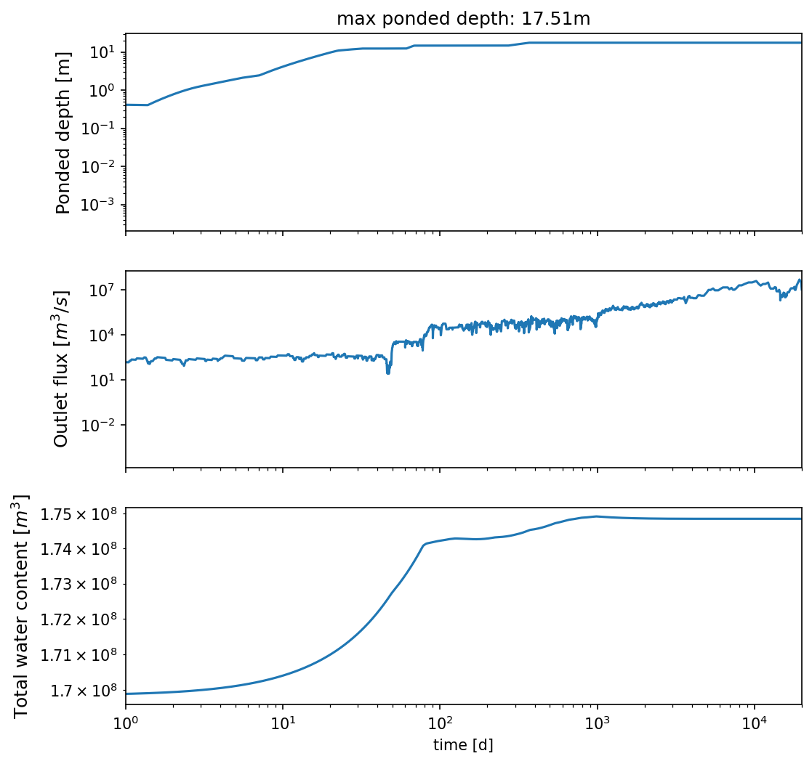
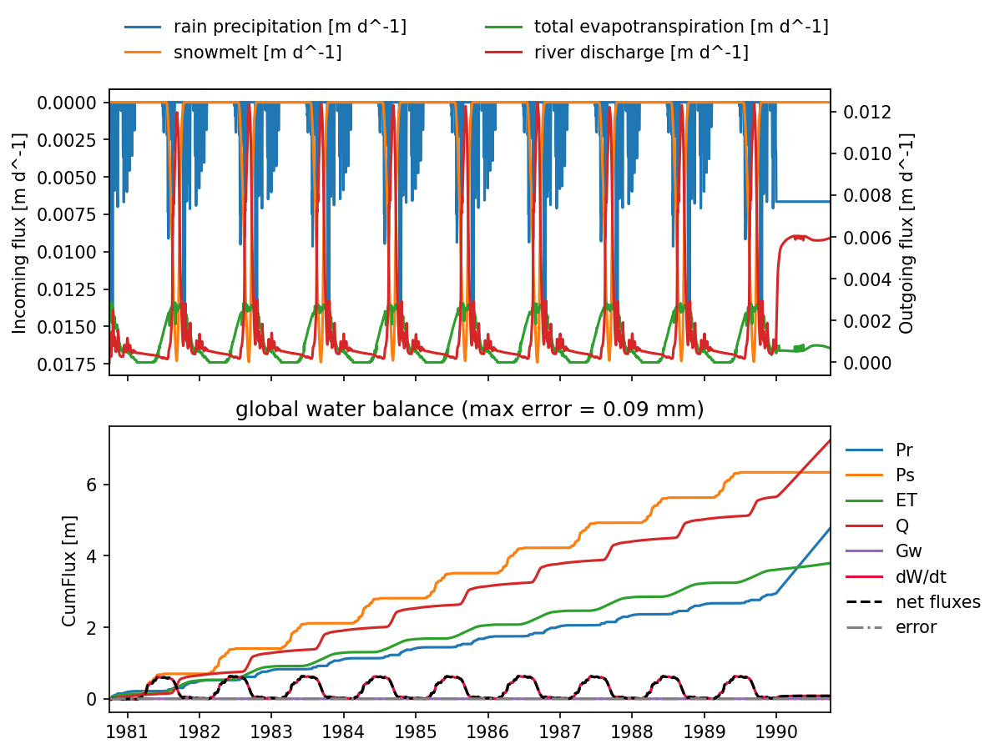
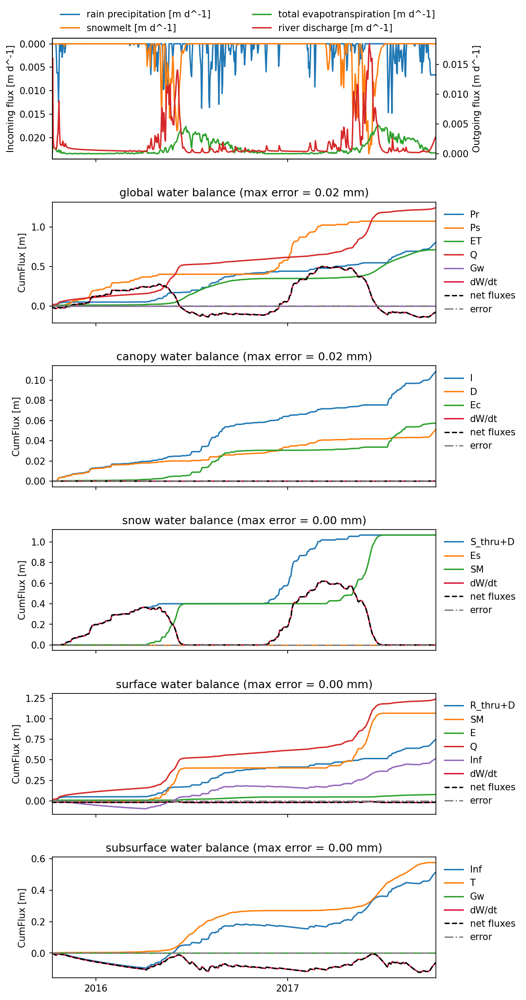

Water balance plots#
This sheet checks and documents the water balance for ATS simulations based on models such as “priestly_taylor_canopy_evapotranspiration” that include four water pools – canopy, snow, surface water, and subsurface water. We can verify each of these independently.
Note all of these are done in units of [m] or [m/s], which means dividing by surface area or molar density as required to convert to these units.
Global water balance
First look at the global balance. The global balance is given by:
where:
WC: total global water content across all four pools (surface, canopy, snow, and subsurface; converted from mol –> m)
P: precip of rain
S: precip of snow
ET: total evapotranspiration across all four pools (canopy evaporation, snow sublimation/condensation, surface water evaporation, and transpiration)
Q: surface water runoff
Snow water balance
Next lets verify each individual component. First we look at snow.
Snow mass balance is given by:
where:
WC_snow: snow water content
S_throughfall: portion of snow precip that misses the canopy and lands on the snowpack
S_drippage: portion of snow that drops from the canopy
E_snow: snow sublimation (positive) or condensation (negative)
SM: snow melt
Canopy water balance
where:
WC_can: canopy water content
I: interception of rain and snow
D: drainage and dripping from the canopy
E_can: leaf canopy water evaporation
Surface water balance
where:
WC_surf: surface water content
P_throughfall: throughfall of rain
D_rain: canopy drainage of rain
SM: snowmelt
E: surface water/bare ground evaporation
Q: runoff/discharge (converted to m/s)
I: infiltration (water infiltrates into the subsurface, i.e. leaving surface)
Subsurface water balance
Lastly the subsurface is fairly simple because we closed all the boundaries except the surface:
Where:
WC_sub: subsurface water content
I: infiltration
T: transpiration
%matplotlib inline
import matplotlib as mpl
mpl.rcParams['figure.dpi'] = 150
%load_ext autoreload
%autoreload 2
import os, re, glob
import numpy as np, pandas as pd
import h5py
import matplotlib.pyplot as plt
import modvis.ATSutils as utils
import logging
logging.basicConfig(level=logging.INFO, format='%(asctime)s - %(name)s - %(levelname)s: %(message)s')
# run_steadystate = "1-spinup_steadystate"
work_dir = f"../../model2/"
rho_m = 55500 # moles/m^3, water molar density. Check this in the xml input file.
plot spinup-steadystate#
run_dir = "1-spinup_steadystate"
model_dir = os.path.join(work_dir, run_dir)
logging.info(f"Loading data from {model_dir}")
2025-04-07 14:55:44,791 - root - INFO: Loading data from ../../model2/1-spinup_steadystate
df = pd.read_csv(os.path.join(model_dir, 'water_balance.dat'), comment='#')
# df['time [d]'] = df['time [s]']/86400
df.set_index('time [d]', inplace = True)
# df['outlet flux [m^3/s]'] = df['surface outlet flux [mol/s]']/ rho_m
# df['subsurface water content [m^3]'] = df['total water content [mol]']/ rho_m
df['outlet flux [m^3/d]'] = df['net runoff [mol d^-1]']/ rho_m
df['total water content [m^3]'] = (df['surface water content [mol]'] + df['subsurface water content [mol]'])/ rho_m
df
| net runoff [mol d^-1] | surface water content [mol] | subsurface water content [mol] | max ponded depth [m] | outlet flux [m^3/d] | total water content [m^3] | |
|---|---|---|---|---|---|---|
| time [d] | ||||||
| 0.000000 | 0.000000e+00 | 0.000000e+00 | 9.426130e+12 | 0.000000 | 0.000000e+00 | 1.698402e+08 |
| 0.000058 | 0.000000e+00 | 0.000000e+00 | 9.426130e+12 | 0.000000 | 0.000000e+00 | 1.698402e+08 |
| 0.000116 | 0.000000e+00 | 0.000000e+00 | 9.426131e+12 | 0.000000 | 0.000000e+00 | 1.698402e+08 |
| 0.000174 | 0.000000e+00 | 0.000000e+00 | 9.426131e+12 | 0.000000 | 0.000000e+00 | 1.698402e+08 |
| 0.000246 | 0.000000e+00 | 0.000000e+00 | 9.426131e+12 | 0.000000 | 0.000000e+00 | 1.698402e+08 |
| ... | ... | ... | ... | ... | ... | ... |
| 18262.500000 | 5.295067e+11 | 4.755486e+11 | 9.228664e+12 | 17.506471 | 9.540661e+06 | 1.748507e+08 |
| 18574.181848 | 1.056328e+12 | 4.755486e+11 | 9.228664e+12 | 17.506471 | 1.903294e+07 | 1.748507e+08 |
| 19335.123859 | 2.578925e+12 | 4.755486e+11 | 9.228664e+12 | 17.506471 | 4.646712e+07 | 1.748507e+08 |
| 19833.780965 | 1.690010e+12 | 4.755486e+11 | 9.228664e+12 | 17.506471 | 3.045063e+07 | 1.748507e+08 |
| 20000.000000 | 5.633366e+11 | 4.755486e+11 | 9.228664e+12 | 17.506471 | 1.015021e+07 | 1.748507e+08 |
2060 rows × 6 columns
fig, axes = plt.subplots(3,1, figsize=(8, 8), sharex = True)
fontsize = 12
xlim = [1, df.index[-1]]
ax = axes[0]
df.plot( y='max ponded depth [m]', ax = ax)
ax.set_xlim(xlim)
ax.set_title(f"max ponded depth: {df['max ponded depth [m]'].max():.2f}m")
ax.set_yscale('log')
ax.set_xscale('log')
ax.set_ylabel('Ponded depth [m]', fontsize = fontsize)
ax.get_legend().remove()
ax = axes[1]
df.plot( y='outlet flux [m^3/d]', ax = ax)
ax.set_xlim(xlim)
ax.set_yscale('log')
ax.set_xscale('log')
ax.set_ylabel('Outlet flux [$m^3/s$]', fontsize = fontsize)
ax.get_legend().remove()
ax = axes[2]
df.plot( y='total water content [m^3]', ax = ax)
ax.set_xlim(xlim)
ax.set_yscale('log')
ax.set_xscale('log')
ax.set_ylabel('Total water content [$m^3$]', fontsize = fontsize)
ax.get_legend().remove()

plot spinup-cyclic#
run_dir = "2-spinup_cyclic"
model_dir = os.path.join(work_dir, run_dir)
logging.info(f"Loading data from {model_dir}")
2025-04-07 15:01:37,924 - root - INFO: Loading data from ../../model2/2-spinup_cyclic
df = utils.load_waterBalance(model_dir, WB_filename="water_balance_computational_domain.csv",
domain_names = ['global'],
canopy = True, plot = True
)

plot transient#
run_dir = "3-transient"
model_dir = os.path.join(work_dir, run_dir)
logging.info(f"Loading data from {model_dir}")
2025-04-07 15:01:47,439 - root - INFO: Loading data from ../../model2/3-transient
df = utils.load_waterBalance(model_dir, WB_filename="water_balance_computational_domain.csv",
domain_names = None,
canopy = True, plot = True
)
